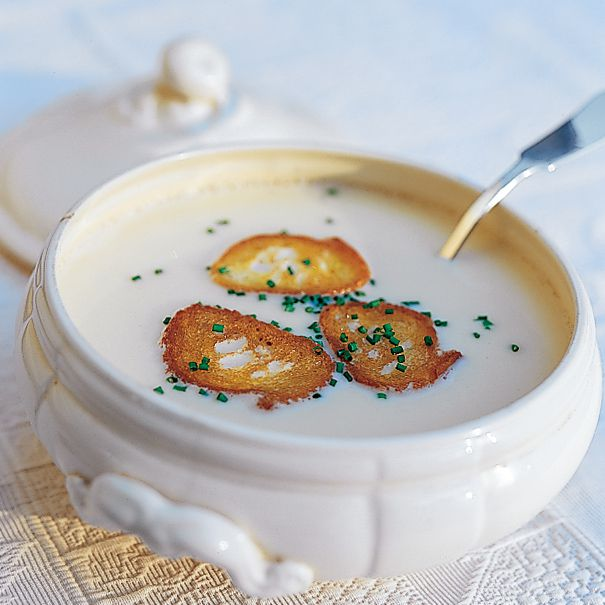

GARLIC CREAM SOUP

Description:
Garlic soup is a type of soup using garlic as a main ingredient. In Spanish cuisine, sopa de ajo ('soup of garlic') is a traditional garlic soup made with bread and egg poached in chicken broth, and laced with garlic and sherry.
Ingredients:
- 3-4 heads of garlic
- 2 tbsp olive oil
- 4-8 oz pancetta, diced
- 1 small onion, chopped
- 4 cups chicken stock
- 1/2 cup parmesan cheese, grated
- 2 cups kale, ribs removed, shredded
- 1 cup heavy cream
- 1/2 tsp
- 1/2 tsp pepper
Steps:
-
Preheat oven to 180C.
-
Trim the tops off 4 of the heads of garlic. Just enough to expose all its cloves. Pour 1/2 tablespoon olive oil over the exposed cloves and sprinkle with a little salt and pepper. Place each bulb right side up on a small square of foil. Fold the foil around the bulb of garlic and place on a cookie sheet. Roast the garlic for 45 minutes. Cool thoroughly.
-
In a large pot, cook diced pancetta over medium heat until crispy, about 5-7 minutes. Drain off all but 1 tablespoon of pancetta fat. Reserve crispy pancetta in bowl. Add chopped onion to pancetta drippings in pan. Sauté onions until they start to caramelize, about 10 minutes.
-
When roasted garlic is cooled, press it out of its skins. Add it to a blender along with the chicken stock and cooked onions. Purée the soup until smooth.
-
Return soup to the pot, add kale and parmesan and bring to a simmer until kale is tender. Add cream and heat until desired temperature. Sprinkle the pancetta evenly among bowls and serve.
Source
Back to the Main Page